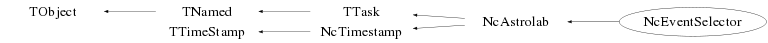

class NcEventSelector: public NcAstrolab
Class NcEventSelector TTask based processor to perform generic event selection. This class is derived from NcAstrolab in order to also provide event selection based on space and time matching with external (astrophysical) objects and phenomena. After having applied the various selection criteria, this processor introduces an NcDevice with the name "NcEventSelector" into the event. This device contains named signal slots to indicate the settings of the various selection parameters. One of the slots has the name "Select" and the signal value of this slot indicates the final selection result. value : -1 ==> Event rejected 0 ==> Decision unknown (incomplete selection parameters) 1 ==> Event selected Event selection may be performed based on various selection types, e.g. individual track observables, total event observables or space and time matching with external objects. These types can be (de)activated via the SetSelector member function. The specific selection criteria for each selection type may be specified via the SetRange memberfunction. Note that by default the selection is "Unknown", which implies that the various specified selection criteria have to actively select or reject an event. In view of this the user is advised to use different lower and upper bound values at the invokation of SetRange to prevent computer accuracy problems. The logic to be used in the selection process with the various criteria is set via the memberfunction SetLogic. Obviously, matching of tracks with various external objects is always performed in logical "or". For investigation of individual track observables and/or matching with external objects, the user may define a restricted set of tracks to be used in the evaluation procedures. The definition of such a restricted track set is performed via the memberfunction UseTracks. Example : gSystem->Load("ncfspack"); NcEventSelector sel; sel.SetExperiment("IceCube"); // The IceCube South Pole Neutrino Observatory sel.SetSelector("astro"); sel.SetSelector("track"); sel.SetSelector("event"); sel.SetLogic("and"); sel.UseTracks("*"); sel.SetRange("track","p",0.5,1e20); // Require at least 500 MeV/c track momentum sel.SetRange("event","ntrk","*",1,3); // Only low multiplicity events // Match with Astrophysical objects within 5 degrees and 10 seconds Float_t da=5; Float_t dt=10; sel.SetAstroMatch(da,dt,"from"); // Some observed event to be investigated NcEvent evt; evt.SetUT(1989,7,30,8,14,23,738504,0); Float_t vec[3]={1,23.8,118.65}; Nc3Vector r; r.SetVector(vec,"sph","deg"); NcTrack t; t.SetNameTitle("SomeTrack","Just a dummy test track"); r*=-1; // Let track originate from the specified location t.Set3Momentum(r); evt.AddTrack(t); // Enter some external (astrophysical) reference signals Float_t alpha=194818.0; Float_t delta=84400.; sel.SetSignal(1,alpha,"hms",delta,"dms","equ","B",1950,-1,"M","Altair"); alpha=124900.0; delta=272400.; sel.SetSignal(1,alpha,"hms",delta,"dms","equ","B",1950,-1,"M","NGP"); alpha=64508.917; delta=-164258.02; sel.SetSignal(1,alpha,"hms",delta,"dms","equ","J",2000,-1,"M","Sirius"); alpha=23149.08; delta=891550.8; sel.SetSignal(1,alpha,"hms",delta,"dms","equ","J",2000,-1,"M","Polaris"); alpha=43600.; delta=163100.; sel.SetSignal(1,alpha,"hms",delta,"dms","equ","J",2000,-1,"M","Aldebaran"); sel.SetSignal(1,182948.53,"hms",380228.45,"dms","equ","J",2000,-1,"M","LyrA"); sel.SetSignal(1,0,"deg",-90,"deg","gal",0,-1,"M","SGP"); sel.SetUT(1989,7,30,8,14,16,0,0); sel.SetSignal(1,327.531,"deg",-35.8903,"deg","gal",0,-1,"M","GRB890730"); // This matches our track // List all stored reference objects sel.ListSignals("equ","T",5); // Let's see what the event selection makes of it NcJob q; q.Add(&sel); q.ListEnvironment(); q.ProcessObject(&evt); NcDevice* evtsel=(NcDevice*)evt.GetDevice("NcEventSelector"); if (evtsel) evtsel->Data(); --- Author: Nick van Eijndhoven 17-sep-2007 Utrecht University - Modified: NvE $Date: 2016-06-13 12:52:31 +0200 (Mon, 13 Jun 2016) $ NCFS
Function Members (Methods)
public:
| NcEventSelector(const NcEventSelector& q) | |
| NcEventSelector(const char* name = "NcEventSelector", const char* title = "Event selection") | |
| virtual | ~NcEventSelector() |
| virtual void | TTask::Abort()MENU |
| void | TObject::AbstractMethod(const char* method) const |
| virtual void | TTask::Add(TTask* task) |
| void | NcTimestamp::AddSec(Double_t seconds) |
| Double_t | NcTimestamp::Almanac(Double_t* dpsi = 0, Double_t* deps = 0, Double_t* eps = 0, Double_t* dl = 0, TString name = "", Double_t* el = 0, Double_t* eb = 0, Double_t* er = 0, Double_t* value = 0, Int_t j = 0) |
| virtual void | TObject::AppendPad(Option_t* option = "") |
| Double_t | TTimeStamp::AsDouble() const |
| Double_t | TTimeStamp::AsGAST(Double_t UT1Offset = 0) const |
| Double_t | TTimeStamp::AsGMST(Double_t UT1Offset = 0) const |
| Double_t | TTimeStamp::AsJulianDate() const |
| Double_t | TTimeStamp::AsLAST(Double_t Longitude, Double_t UT1Offset = 0) const |
| Double_t | TTimeStamp::AsLMST(Double_t Longitude, Double_t UT1Offset = 0) const |
| const char* | TTimeStamp::AsString(Option_t* option = "") const |
| virtual void | TTask::Browse(TBrowser* b) |
| static TClass* | Class() |
| virtual const char* | TObject::ClassName() const |
| virtual void | TTask::CleanTasks() |
| virtual void | TTask::Clear(Option_t* option = "") |
| virtual TObject* | Clone(const char* name = "") const |
| virtual Int_t | TNamed::Compare(const TObject* obj) const |
| virtual void | TTask::Continue()MENU |
| Double_t | NcTimestamp::Convert(Int_t days, Int_t secs, Int_t ns) const |
| Double_t | NcTimestamp::Convert(Int_t hh, Int_t mm, Double_t ss) const |
| void | NcTimestamp::Convert(Double_t date, Int_t& days, Int_t& secs, Int_t& ns) const |
| void | NcTimestamp::Convert(Double_t h, Int_t& hh, Int_t& mm, Double_t& ss) const |
| Double_t | NcTimestamp::Convert(Int_t hh, Int_t mm, Int_t ss, Int_t ns, Int_t ps) const |
| void | NcTimestamp::Convert(Double_t h, Int_t& hh, Int_t& mm, Int_t& ss, Int_t& ns, Int_t& ps) const |
| Double_t | NcAstrolab::ConvertAngle(Double_t a, TString in, TString out) const |
| virtual void | TNamed::Copy(TObject& named) const |
| void | NcAstrolab::Data(Int_t mode = 1, TString u = "deg", Bool_t utc = kTRUE) |
| void | NcTimestamp::Date(Int_t mode = 3, Double_t offset = 0) |
| virtual void | TObject::Delete(Option_t* option = "")MENU |
| void | NcAstrolab::DisplaySignal(TString frame, TString mode, NcTimestamp* ts, Int_t j = 0, TString proj = "ham", Int_t clr = 0) |
| void | NcAstrolab::DisplaySignal(TString frame, TString mode, NcTimestamp* ts, TString name, TString proj = "ham", Int_t clr = 0, Int_t type = 0) |
| void | NcAstrolab::DisplaySignals(TString frame, TString mode, NcTimestamp* ts, TString proj = "ham", Int_t clr = 0, Int_t nmax = -1, Int_t j = -1, Int_t type = -1) |
| virtual Int_t | TObject::DistancetoPrimitive(Int_t px, Int_t py) |
| virtual void | TObject::Draw(Option_t* option = "") |
| virtual void | TObject::DrawClass() constMENU |
| virtual TObject* | TObject::DrawClone(Option_t* option = "") constMENU |
| virtual void | TObject::Dump() constMENU |
| static void | TTimeStamp::DumpTMStruct(const tm_t& tmstruct) |
| virtual void | TObject::Error(const char* method, const char* msgfmt) const |
| virtual void | Exec(Option_t* opt) |
| virtual void | TObject::Execute(const char* method, const char* params, Int_t* error = 0) |
| virtual void | TObject::Execute(TMethod* method, TObjArray* params, Int_t* error = 0) |
| virtual void | TObject::ExecuteEvent(Int_t event, Int_t px, Int_t py) |
| virtual void | TTask::ExecuteTask(Option_t* option = "0")MENU |
| virtual void | TTask::ExecuteTasks(Option_t* option) |
| virtual void | TObject::Fatal(const char* method, const char* msgfmt) const |
| virtual void | TNamed::FillBuffer(char*& buffer) |
| virtual TObject* | TObject::FindObject(const char* name) const |
| virtual TObject* | TObject::FindObject(const TObject* obj) const |
| TF1 | NcAstrolab::GetBackgroundRatePDF(Int_t Noff, Double_t Toff, Double_t bmax = -1, Double_t prec = 709) |
| Double_t | NcTimestamp::GetBE() |
| Double_t | NcTimestamp::GetBE(Double_t date, TString mode = "jd") const |
| Int_t | TTask::GetBreakin() const |
| Int_t | TTask::GetBreakout() const |
| Double_t | NcAstrolab::GetComovingDistance(Double_t z, TString u = "Mpc") const |
| TH1F | NcAstrolab::GetCountsHistogram(TF1& spec, Int_t nbins, Double_t xmin, Double_t xmax, Int_t mode, TString s = "") const |
| Double_t | NcAstrolab::GetCredibleInterval(TH1* his, Double_t p, Double_t& xlow, Double_t& xup) |
| Double_t | NcAstrolab::GetCredibleInterval(TH1* his, Double_t p, Float_t& xlow, Float_t& xup) |
| Double_t | NcAstrolab::GetCredibleInterval(TF1 pdf, Double_t p, Double_t& xlow, Double_t& xup, Int_t n = 1000) |
| Double_t | NcAstrolab::GetCredibleInterval(TF1 pdf, Double_t p, Float_t& xlow, Float_t& xup, Int_t n = 1000) |
| TH1F | NcAstrolab::GetCumulHistogram(TH1* h, TString name, TString mode = "F") const |
| TH1F | NcAstrolab::GetCumulHistogram(TF1* f, TString name, Int_t nbins, Double_t xmin, Double_t xmax, TString mode = "F") const |
| UInt_t | TTimeStamp::GetDate(Bool_t inUTC = kTRUE, Int_t secOffset = 0, UInt_t* year = 0, UInt_t* month = 0, UInt_t* day = 0) const |
| Int_t | TTimeStamp::GetDayOfWeek(Bool_t inUTC = kTRUE, Int_t secOffset = 0) const |
| static Int_t | TTimeStamp::GetDayOfWeek(Int_t day, Int_t month, Int_t year) |
| Int_t | TTimeStamp::GetDayOfYear(Bool_t inUTC = kTRUE, Int_t secOffset = 0) const |
| static Int_t | TTimeStamp::GetDayOfYear(Int_t day, Int_t month, Int_t year) |
| Double_t | NcAstrolab::GetDifference(TString name, TString au, Double_t& dt, TString tu, Int_t mode = 1) |
| Double_t | NcAstrolab::GetDifference(Int_t jref, TString au, Double_t& dt, TString tu, Int_t mode = 1, Int_t* ia = 0, Int_t* it = 0) |
| TH1F | NcAstrolab::GetDifHistogram(TH1* hin, Int_t mode, TString s = "", TF1* f = 0) const |
| virtual Option_t* | TObject::GetDrawOption() const |
| static Long_t | TObject::GetDtorOnly() |
| TH1F | NcAstrolab::GetDxHistogram(TH1* hx, Int_t nc, Double_t dxbin = -1, Double_t dxmin = -1, Double_t dxmax = -1) const |
| Double_t | NcTimestamp::GetEpoch(TString mode) |
| Double_t | NcTimestamp::GetGAST() |
| Double_t | NcTimestamp::GetGMST() |
| void | NcTimestamp::GetGMST(Int_t& hh, Int_t& mm, Int_t& ss, Int_t& ns, Int_t& ps) |
| Double_t | NcAstrolab::GetHourAngle(TString mode, NcTimestamp* ts, Int_t jref = 0, Int_t type = 0) |
| Double_t | NcAstrolab::GetHubbleParameter(Double_t z, TString u = "Mpc") const |
| virtual const char* | TObject::GetIconName() const |
| TTree* | NcTimestamp::GetIERSdatabase() const |
| Double_t | NcTimestamp::GetJD() |
| Double_t | NcTimestamp::GetJD(Double_t e, TString mode = "J") const |
| void | NcTimestamp::GetJD(Int_t& jd, Int_t& sec, Int_t& ns) |
| Double_t | NcTimestamp::GetJD(Int_t y, Int_t m, Int_t d, Int_t hh, Int_t mm, Int_t ss, Int_t ns) const |
| Double_t | NcTimestamp::GetJE() |
| Double_t | NcTimestamp::GetJE(Double_t date, TString mode = "jd") const |
| NcPosition | NcAstrolab::GetLabPosition() const |
| void | NcAstrolab::GetLabPosition(Double_t& l, Double_t& b, TString u = "deg") const |
| Double_t | NcAstrolab::GetLAST() |
| Double_t | NcAstrolab::GetLightTravelDistance(Double_t z, TString u = "Mpc") const |
| Double_t | NcAstrolab::GetLightTravelTime(Double_t z) const |
| TList* | TTask::GetListOfTasks() const |
| Double_t | NcAstrolab::GetLMST() |
| TH1F | NcAstrolab::GetLogHistogram(TH1* hin, Int_t mode, TString s = "") const |
| Double_t | NcAstrolab::GetLT() |
| Double_t | NcAstrolab::GetLuminosityDistance(Double_t z, TString u = "Mpc") const |
| Double_t | NcAstrolab::GetMaxDt() const |
| Double_t | NcTimestamp::GetMJD() |
| Double_t | NcTimestamp::GetMJD(Double_t e, TString mode = "J") const |
| void | NcTimestamp::GetMJD(Int_t& mjd, Int_t& sec, Int_t& ns) |
| Double_t | NcTimestamp::GetMJD(Int_t y, Int_t m, Int_t d, Int_t hh, Int_t mm, Int_t ss, Int_t ns) const |
| Int_t | TTimeStamp::GetMonth(Bool_t inUTC = kTRUE, Int_t secOffset = 0) const |
| virtual const char* | TNamed::GetName() const |
| Int_t | TTimeStamp::GetNanoSec() const |
| Double_t | NcAstrolab::GetNeutrinoXsection(Int_t mode, Int_t type, Double_t egev, Double_t xscale = 1, Double_t* eprimgev = 0, Double_t* alpha = 0) const |
| Int_t | NcAstrolab::GetNRefSignals(Int_t mode = 0) const |
| Int_t | NcTimestamp::GetNs() const |
| Int_t | NcAstrolab::GetNsignals(Int_t type, Int_t mode = 0) const |
| Double_t | NcAstrolab::GetNuclearMass(Int_t z, Int_t n, Int_t mode = 1) const |
| virtual char* | TObject::GetObjectInfo(Int_t px, Int_t py) const |
| static Bool_t | TObject::GetObjectStat() |
| virtual Option_t* | TObject::GetOption() const |
| Double_t | NcAstrolab::GetPhysicalDistance(Double_t z, TString u = "Mpc", Int_t t = 1) const |
| Double_t | NcAstrolab::GetPhysicalParameter(TString name) const |
| Int_t | NcAstrolab::GetPositionScramble(Double_t* dmin = 0, Double_t* dmax = 0, TF1* df = 0, Double_t* thmin = 0, Double_t* thmax = 0, TF1* thf = 0, Double_t* phimin = 0, Double_t* phimax = 0, TF1* phif = 0) |
| Double_t | NcAstrolab::GetProperDistance(Double_t z, TString u = "Mpc", Int_t t = 1) const |
| Int_t | NcTimestamp::GetPs() const |
| NcRandom* | NcAstrolab::GetRandomiser(Int_t& iseed, Int_t& cnt1, Int_t& cnt2) const |
| time_t | TTimeStamp::GetSec() const |
| NcSignal* | NcAstrolab::GetSignal(Int_t jref = 0, Int_t type = 0) |
| NcSignal* | NcAstrolab::GetSignal(TString name, Int_t type = 0, NcTimestamp* ts = 0) |
| NcSignal* | NcAstrolab::GetSignal(Double_t& d, Double_t& a, TString au, Double_t& b, TString bu, TString frame, NcTimestamp* ts, Int_t jref, TString mode = "T", Int_t type = 0) |
| NcSignal* | NcAstrolab::GetSignal(Double_t& d, Double_t& a, TString au, Double_t& b, TString bu, TString frame, NcTimestamp* ts, TString name, TString mode = "T", Int_t type = 0) |
| NcSignal* | NcAstrolab::GetSignal(Double_t& d, Double_t& a, TString au, Double_t& b, TString bu, TString frame, TString s, Double_t e, Int_t jref, TString mode, Int_t type = 0) |
| NcSignal* | NcAstrolab::GetSignal(Double_t& d, Double_t& a, TString au, Double_t& b, TString bu, TString frame, TString s, Double_t e, TString name, TString mode, Int_t type = 0) |
| Int_t | NcAstrolab::GetSignalIndex(TString name, Int_t type = 0) |
| TF1 | NcAstrolab::GetSignalRatePDF(Int_t Non, Double_t Ton, Int_t Noff, Double_t Toff, Double_t Ra = 1, Double_t Re = 1, Double_t smax = -1, Double_t bmax = -1, Double_t prec = 709) |
| Double_t | NcAstrolab::GetSolidAngle(Double_t thetamin, Double_t thetamax, TString tu, Double_t phimin, Double_t phimax, TString pu) const |
| Double_t | NcTimestamp::GetTAI(Bool_t tmjd = kTRUE) |
| Int_t | NcTimestamp::GetTAI(Int_t& d, Int_t& sec, Int_t& ns, Int_t& ps, Bool_t tmjd = kTRUE) |
| Int_t | NcTimestamp::GetTAI(Int_t& hh, Int_t& mm, Int_t& ss, Int_t& ns, Int_t& ps, TString type = "TAI") |
| UInt_t | TTimeStamp::GetTime(Bool_t inUTC = kTRUE, Int_t secOffset = 0, UInt_t* hour = 0, UInt_t* min = 0, UInt_t* sec = 0) const |
| Int_t | NcAstrolab::GetTimeScramble(Double_t* tmin = 0, Double_t* tmax = 0, TF1* frndm = 0) |
| timespec_t | TTimeStamp::GetTimeSpec() const |
| virtual const char* | TNamed::GetTitle() const |
| Double_t | NcTimestamp::GetTJD() |
| Double_t | NcTimestamp::GetTJD(Double_t e, TString mode = "J") const |
| void | NcTimestamp::GetTJD(Int_t& tjd, Int_t& sec, Int_t& ns) |
| Double_t | NcTimestamp::GetTJD(Int_t y, Int_t m, Int_t d, Int_t hh, Int_t mm, Int_t ss, Int_t ns) const |
| virtual UInt_t | TObject::GetUniqueID() const |
| Double_t | NcTimestamp::GetUnixTime() |
| Double_t | NcAstrolab::GetUpperLimit(TF1 pdf, Double_t p) |
| Double_t | NcAstrolab::GetUpperLimit(TH1* pdf, Double_t p) |
| Double_t | NcTimestamp::GetUT() |
| void | NcTimestamp::GetUT(Int_t& hh, Int_t& mm, Int_t& ss, Int_t& ns, Int_t& ps) |
| Int_t | NcTimestamp::GetUTCparameters(Int_t& leap, Double_t& dut) const |
| Int_t | NcTimestamp::GetUTCparameters(Int_t mjd, Int_t& leap, Double_t& dut) const |
| Int_t | TTimeStamp::GetWeek(Bool_t inUTC = kTRUE, Int_t secOffset = 0) const |
| static Int_t | TTimeStamp::GetWeek(Int_t day, Int_t month, Int_t year) |
| static Int_t | TTimeStamp::GetZoneOffset() |
| virtual Bool_t | TObject::HandleTimer(TTimer* timer) |
| virtual ULong_t | TNamed::Hash() const |
| virtual void | TObject::Info(const char* method, const char* msgfmt) const |
| virtual Bool_t | TObject::InheritsFrom(const char* classname) const |
| virtual Bool_t | TObject::InheritsFrom(const TClass* cl) const |
| virtual void | TObject::Inspect() constMENU |
| void | TObject::InvertBit(UInt_t f) |
| virtual TClass* | IsA() const |
| Bool_t | TTask::IsActive() const |
| virtual Bool_t | TObject::IsEqual(const TObject* obj) const |
| virtual Bool_t | TTask::IsFolder() const |
| static Bool_t | TTimeStamp::IsLeapYear(Int_t year) |
| Bool_t | TTimeStamp::IsLeapYear(Bool_t inUTC = kTRUE, Int_t secOffset = 0) const |
| Bool_t | TObject::IsOnHeap() const |
| virtual Bool_t | TNamed::IsSortable() const |
| Bool_t | TObject::IsZombie() const |
| Double_t | NcAstrolab::KolmogorovTest(TString mode, TH1* h1, TH1* h2 = 0, TF1* pdf = 0, Double_t nr = 1000, TH1F* ksh = 0, Int_t ncut = 0, Double_t* nrx = 0, Int_t mark = 1) |
| void | NcAstrolab::ListSignals(TString frame, TString mode, Int_t ndig = 1, TString emode = "T", Int_t nmax = 10, Int_t j = -1, Int_t type = -1) |
| TTree* | NcTimestamp::LoadUTCparameterFiles(TString leapfile, TString dutfile) |
| virtual void | TTask::ls(Option_t* option = "*") constMENU |
| TArrayI* | NcAstrolab::MatchRefSignal(Double_t da, TString au, Double_t dt, TString tu, Int_t mode = 1) |
| void | NcAstrolab::MatchSignals(NcDevice& matches, TString name, Double_t da, TString au, Double_t dt, TString tu, Int_t mode = 1, Int_t itype = 0, Int_t j1 = 1, Int_t j2 = 0, Int_t jtype = 1) |
| void | NcAstrolab::MatchSignals(NcDevice& matches, Double_t da, TString au, Double_t dt, TString tu, Int_t mode = 1, Int_t i1 = 1, Int_t i2 = 0, Int_t itype = 0, Int_t j1 = 1, Int_t j2 = 0, Int_t jtype = 1) |
| void | TObject::MayNotUse(const char* method) const |
| static time_t | TTimeStamp::MktimeFromUTC(tm_t* tmstruct) |
| virtual Bool_t | TObject::Notify() |
| void | TObject::Obsolete(const char* method, const char* asOfVers, const char* removedFromVers) const |
| static void | TObject::operator delete(void* ptr) |
| static void | TObject::operator delete(void* ptr, void* vp) |
| static void | TObject::operator delete[](void* ptr) |
| static void | TObject::operator delete[](void* ptr, void* vp) |
| double | TTimeStamp::operator double() const |
| void* | TObject::operator new(size_t sz) |
| void* | TObject::operator new(size_t sz, void* vp) |
| void* | TObject::operator new[](size_t sz) |
| void* | TObject::operator new[](size_t sz, void* vp) |
| NcEventSelector& | operator=(const NcEventSelector&) |
| virtual void | TObject::Paint(Option_t* option = "") |
| virtual void | TObject::Pop() |
| virtual void | TNamed::Print(Option_t* option = "") const |
| void | NcAstrolab::PrintAngle(Double_t a, TString in, TString out, Int_t ndig = 1) const |
| void | NcAstrolab::PrintSignal(TString frame, TString mode, NcTimestamp* ts, Int_t ndig, Int_t jref = 0, TString emode = "T", Int_t type = 0) |
| void | NcAstrolab::PrintSignal(TString frame, TString mode, NcTimestamp* ts, Int_t ndig, TString name, TString emode = "T", Int_t type = 0) |
| void | NcTimestamp::PrintTime(Double_t h, Int_t ndig = 1) const |
| void | NcAstrolab::RandomPosition(Nc3Vector& v, Double_t thetamin, Double_t thetamax, Double_t phimin, Double_t phimax) |
| virtual Int_t | TObject::Read(const char* name) |
| virtual void | TObject::RecursiveRemove(TObject* obj) |
| void | NcAstrolab::RemoveRefSignal(Int_t j, Int_t compress) |
| void | NcAstrolab::RemoveRefSignal(TString name, Int_t compress) |
| void | NcAstrolab::RemoveSignal(Int_t j, Int_t type, Int_t compress) |
| void | NcAstrolab::RemoveSignal(TString name, Int_t type, Int_t compress) |
| void | TObject::ResetBit(UInt_t f) |
| virtual void | TObject::SaveAs(const char* filename = "", Option_t* option = "") constMENU |
| virtual void | TObject::SavePrimitive(ostream& out, Option_t* option = "") |
| void | TTimeStamp::Set() |
| void | TTimeStamp::Set(UInt_t tloc, Bool_t isUTC, Int_t secOffset, Bool_t dosDate) |
| void | TTimeStamp::Set(Int_t date, Int_t time, Int_t nsec, Bool_t isUTC, Int_t secOffset) |
| void | TTimeStamp::Set(Int_t year, Int_t month, Int_t day, Int_t hour, Int_t min, Int_t sec, Int_t nsec, Bool_t isUTC, Int_t secOffset) |
| void | TTask::SetActive(Bool_t active = kTRUE)TOGGLE |
| void | SetAstroMatch(Double_t da, Double_t dt, TString dir) |
| void | TObject::SetBit(UInt_t f) |
| void | TObject::SetBit(UInt_t f, Bool_t set) |
| void | TTask::SetBreakin(Int_t breakin = 1)TOGGLE |
| void | TTask::SetBreakout(Int_t breakout = 1)TOGGLE |
| void | NcAstrolab::SetCentralMeridian(Double_t phi, TString u = "deg") |
| virtual void | TObject::SetDrawOption(Option_t* option = "")MENU |
| static void | TObject::SetDtorOnly(void* obj) |
| void | NcTimestamp::SetEpoch(Double_t e, TString mode, TString utc = "A", Int_t leap = 0, Double_t dut = 0) |
| void | NcAstrolab::SetExperiment(TString name) |
| Int_t | NcTimestamp::SetGPS(Int_t w, Int_t sow, Int_t ns, Int_t ps, TString utc, Int_t leap, Double_t dut = 0, Int_t icycle = 0) |
| Int_t | NcTimestamp::SetGPS(Int_t w, Int_t dow, Int_t sod, Int_t ns, Int_t ps, TString utc, Int_t leap, Double_t dut = 0, Int_t icycle = 0) |
| void | NcTimestamp::SetJD(Double_t jd, TString utc = "A", Int_t leap = 0, Double_t dut = 0) |
| void | NcTimestamp::SetJD(Int_t jd, Int_t sec, Int_t ns, Int_t ps = 0, TString utc = "A", Int_t leap = 0, Double_t dut = 0) |
| void | NcAstrolab::SetLabPosition(Nc3Vector& r) |
| void | NcAstrolab::SetLabPosition(Double_t l, Double_t b, TString u = "deg") |
| void | NcAstrolab::SetLocalFrame(Double_t t1, Double_t p1, Double_t t2, Double_t p2, Double_t t3, Double_t p3) |
| void | SetLogic(TString type) |
| void | NcAstrolab::SetLT(TString date, TString time, Int_t mode) |
| void | NcAstrolab::SetLT(Int_t y, Int_t m, Int_t d, TString time) |
| void | NcAstrolab::SetLT(Int_t y, Int_t d, Int_t s, Int_t ns = 0, Int_t ps = 0) |
| void | NcAstrolab::SetLT(Int_t y, Int_t m, Int_t d, Int_t hh, Int_t mm, Double_t s) |
| void | NcAstrolab::SetLT(Int_t y, Int_t m, Int_t d, Int_t hh, Int_t mm, Int_t ss, Int_t ns = 0, Int_t ps = 0) |
| void | NcAstrolab::SetMarkerSize(Float_t size, Int_t type) |
| void | NcAstrolab::SetMaxDt(Double_t s) |
| void | NcTimestamp::SetMJD(Double_t mjd, TString utc = "A", Int_t leap = 0, Double_t dut = 0) |
| void | NcTimestamp::SetMJD(Int_t mjd, Int_t sec, Int_t ns, Int_t ps = 0, TString utc = "A", Int_t leap = 0, Double_t dut = 0) |
| virtual void | TNamed::SetName(const char* name)MENU |
| virtual void | TNamed::SetNameTitle(const char* name, const char* title) |
| void | TTimeStamp::SetNanoSec(Int_t nsec) |
| void | NcTimestamp::SetNs(Int_t ns) |
| static void | TObject::SetObjectStat(Bool_t stat) |
| void | NcAstrolab::SetPhysicalParameter(TString name, Double_t value) |
| void | NcAstrolab::SetPositionScramble(Int_t mode, Double_t dmin, Double_t dmax, TF1* df = 0, Double_t thmin = 0, Double_t thmax = 0, TF1* thf = 0, Double_t phimin = 0, Double_t phimax = 0, TF1* phif = 0) |
| void | NcTimestamp::SetPs(Int_t ps) |
| void | NcAstrolab::SetRandomiser(Int_t iseed, Int_t cnt1 = 0, Int_t cnt2 = 0, NcTimestamp* ts = 0) |
| void | SetRange(TString type, TString obs, Double_t low, Double_t up) |
| void | SetRange(TString type, TString obs, TString name, Int_t nlow, Int_t nup) |
| void | TTimeStamp::SetSec(Int_t sec) |
| void | SetSelector(TString type, Int_t flag = 1) |
| NcSignal* | NcAstrolab::SetSignal(Double_t d, Double_t a, TString au, Double_t b, TString bu, TString frame, NcTimestamp* ts, Int_t jref, TString mode = "T", TString name = "", Int_t type = 0) |
| NcSignal* | NcAstrolab::SetSignal(Double_t d, Double_t a, TString au, Double_t b, TString bu, TString frame, TString s, Double_t e, Int_t jref, TString mode, TString name = "", Int_t type = 0) |
| Int_t | NcTimestamp::SetTAI(Double_t tai, TString utc, Int_t leap, Double_t dut = 0, Bool_t tmjd = kFALSE) |
| Int_t | NcTimestamp::SetTAI(TString type, TString date, TString time, Int_t mode, TString utc, Int_t leap, Double_t dut = 0) |
| Int_t | NcTimestamp::SetTAI(Int_t d, Int_t sec, Int_t ns, Int_t ps, TString utc, Int_t leap, Double_t dut = 0, Bool_t tmjd = kFALSE) |
| void | NcAstrolab::SetTimeScramble(Int_t mode, Double_t tmin, Double_t tmax, TF1* frndm = 0) |
| virtual void | TNamed::SetTitle(const char* title = "")MENU |
| void | NcTimestamp::SetTJD(Double_t tjd, TString utc = "A", Int_t leap = 0, Double_t dut = 0) |
| void | NcTimestamp::SetTJD(Int_t tjd, Int_t sec, Int_t ns, Int_t ps = 0, TString utc = "A", Int_t leap = 0, Double_t dut = 0) |
| virtual void | TObject::SetUniqueID(UInt_t uid) |
| Int_t | NcTimestamp::SetUnixTime(Double_t sec, TString utc = "A", Int_t leap = 0, Double_t dut = 0) |
| void | NcTimestamp::SetUT(TString date, TString time, Int_t mode, TString utc = "A", Int_t leap = 0, Double_t dut = 0) |
| void | NcTimestamp::SetUT(Int_t y, Int_t m, Int_t d, TString time, TString utc = "A", Int_t leap = 0, Double_t dut = 0) |
| void | NcTimestamp::SetUT(Int_t y, Int_t d, Int_t s, Int_t ns = 0, Int_t ps = 0, TString utc = "A", Int_t leap = 0, Double_t dut = 0) |
| void | NcTimestamp::SetUT(Int_t y, Int_t m, Int_t d, Int_t hh, Int_t mm, Double_t s, TString utc = "A", Int_t leap = 0, Double_t dut = 0) |
| void | NcTimestamp::SetUT(Int_t y, Int_t m, Int_t d, Int_t hh, Int_t mm, Int_t ss, Int_t ns = 0, Int_t ps = 0, TString utc = "A", Int_t leap = 0, Double_t dut = 0) |
| Int_t | NcTimestamp::SetUTCparameters(TString utc, Int_t leap, Double_t dut) |
| virtual void | ShowMembers(TMemberInspector&) |
| virtual Int_t | TNamed::Sizeof() const |
| void | NcAstrolab::SmearPosition(Nc3Vector& v, Double_t sigma) |
| virtual void | Streamer(TBuffer&) |
| void | StreamerNVirtual(TBuffer& ClassDef_StreamerNVirtual_b) |
| virtual void | TObject::SysError(const char* method, const char* msgfmt) const |
| Bool_t | TObject::TestBit(UInt_t f) const |
| Int_t | TObject::TestBits(UInt_t f) const |
| virtual void | TObject::UseCurrentStyle() |
| void | UseTracks(TString name, Int_t n = -1) |
| virtual void | TObject::Warning(const char* method, const char* msgfmt) const |
| virtual Int_t | TObject::Write(const char* name = 0, Int_t option = 0, Int_t bufsize = 0) |
| virtual Int_t | TObject::Write(const char* name = 0, Int_t option = 0, Int_t bufsize = 0) const |
protected:
Data Members
public:
| enum TObject::EStatusBits { | kCanDelete | |
| kMustCleanup | ||
| kObjInCanvas | ||
| kIsReferenced | ||
| kHasUUID | ||
| kCannotPick | ||
| kNoContextMenu | ||
| kInvalidObject | ||
| }; | ||
| enum TObject::[unnamed] { | kIsOnHeap | |
| kNotDeleted | ||
| kZombie | ||
| kBitMask | ||
| kSingleKey | ||
| kOverwrite | ||
| kWriteDelete | ||
| }; |
protected:
| Bool_t | TTask::fActive | true if task is active |
| Double_t | NcAstrolab::fAlphaEM | The electromagnetic fine-structure constant |
| Double_t | NcAstrolab::fAmu | The unified atomic mass unit in MeV/c^2 |
| Double_t | fAstroDa | Maximum angular distance (deg.) w.r.t. the reference object |
| Int_t | fAstroDir | Direction flag for pointing to external objects |
| Double_t | fAstroDt | Maximum absolute time difference (sec.) w.r.t. the reference signal |
| Int_t | fAstroflag | Flag to indicate usage of Astrolab selection criteria |
| Double_t | NcAstrolab::fAu | The Astronomical Unit in m |
| TRotMatrix | NcAstrolab::fB | ! The frame bias matrix for conversion of ICRS to J2000 coordinates |
| Int_t | NcAstrolab::fBias | ! Initialisation flag for fB values (0=uninitialised 1=initialised) |
| Double_t | NcAstrolab::fBoltz | The value of the Boltzmann constant (k) in J K^-1 |
| Int_t | TTask::fBreakin | =1 if a break point set at task extry |
| Int_t | TTask::fBreakout | =1 if a break point set at task exit |
| TCanvas* | NcAstrolab::fCanvas | ! The canvas for the skymap |
| TF1* | NcAstrolab::fDscfunc | Randomisation function for angular difference (or vector length) scrambling |
| Double_t | NcAstrolab::fDscmax | Maximal value for scrambling angular difference (in degrees) or vector length |
| Double_t | NcAstrolab::fDscmin | Minimal value for scrambling angular difference (in degrees) or vector length |
| Double_t | NcTimestamp::fDut | The value of UT-UTC in seconds at the moment of the timestamp |
| TRotMatrix | NcAstrolab::fE | ! Matrix for conversion of equatorial to ecliptic coordinates |
| Float_t | fEventCharges[2] | Event charge range selections |
| TString | fEventDevClass | (Derived) class name of event associated devices |
| Int_t | fEventDevices[2] | Range of number of event associated devices |
| Double_t | fEventEnergies[6] | Event energy range selections |
| Float_t | fEventMasses[2] | Event mass range selections |
| Double_t | fEventMomenta[6] | Event momentum range selections |
| Int_t | fEventTracks[10] | Range of number of various track types |
| TString | fEventTrkName | Name of the tracks for total number of tracks selection |
| Float_t | fEventVetos[2] | Event veto level range selections |
| Int_t | fEventflag | Flag to indicate usage of total event selection criteria |
| NcEvent* | fEvt | Pointer to the current event structure |
| Double_t | NcAstrolab::fFermi | Fermi coupling constant GF/(hbar*c)^3 in GeV^-2 |
| Int_t | fFirst | Flag to indicate first invokation |
| TRotMatrix | NcAstrolab::fG | ! Matrix for conversion of equatorial to galactic coordinates |
| Int_t | NcAstrolab::fGal | ! Type indicator for fG values (0=uninitialised 1=B1950 2=J2000) |
| Double_t | NcAstrolab::fGammaW | Full width of W in GeV |
| Double_t | NcAstrolab::fGammaZ | Full width of Z in GeV |
| TRotMatrix | NcAstrolab::fH | ! Matrix for conversion of equatorial to horizontal coordinates |
| Bool_t | TTask::fHasExecuted | True if task has executed |
| Double_t | NcAstrolab::fHbar | The value of hbar in MeV s |
| Double_t | NcAstrolab::fHbarc | The value of the conversion constant hbar*c in MeV fm |
| Double_t | NcAstrolab::fHbarc2 | The value of the conversion constant (hbar*c)^2 in GeV^2 barn |
| TH2* | NcAstrolab::fHist[2] | ! Temp. histograms for the sky display |
| Double_t | NcAstrolab::fHubble | The value of the Hubble parameter in km s^-1 Mpc^-1 |
| TArrayI* | NcAstrolab::fIndices | ! Storage indices of the matching reference signals |
| Int_t | NcTimestamp::fJns | Remaining fractional number of seconds (in nanoseconds) elapsed within the MJD |
| Int_t | NcTimestamp::fJps | Remaining fractional number of nanoseconds (in picoseconds) elapsed within the MJD |
| Int_t | NcTimestamp::fJsec | Number of seconds elapsed within the MJD |
| TRotMatrix | NcAstrolab::fL | Matrix for conversion of horizontal to local-frame coordinates |
| NcPosition | NcAstrolab::fLabPos | Position of the lab in the terrestrial longitude-latitude frame |
| Int_t | NcTimestamp::fLeap | The cumulated number of leap seconds at the moment of the timestamp |
| Int_t | fLogic | Decision logic (0=unknown 1=and 2=or) |
| Int_t | NcTimestamp::fMJD | Modified Julian Date |
| Double_t | NcAstrolab::fMW | W mass in GeV/c^2 |
| Double_t | NcAstrolab::fMZ | Z mass in GeV/c^2 |
| Int_t | NcAstrolab::fMarkerColor[4] | Color of the marker symbols for the skymaps and related histograms |
| Float_t | NcAstrolab::fMarkerSize[4] | Size of the marker symbols for the skymaps and related histograms |
| Int_t | NcAstrolab::fMarkerStyle[4] | Style of the marker symbols for the skymaps and related histograms |
| TObjArray* | NcAstrolab::fMarkers | ! Temp. array to hold the markers for the signal display |
| Double_t | NcAstrolab::fMaxDt | Maximum time difference (in sec) for GetSignal |
| Double_t | NcAstrolab::fMe | Electron mass in MeV/c^2 |
| Double_t | NcAstrolab::fMeridian | ! Central meridian (in rad) for the sky display |
| Double_t | NcAstrolab::fMmu | Muon mass in MeV/c^2 |
| Double_t | NcAstrolab::fMn | Neutron mass in MeV/c^2 |
| Double_t | NcAstrolab::fMp | Proton mass in MeV/c^2 |
| Double_t | NcAstrolab::fMtau | Tau mass in MeV/c^2 |
| TRotMatrix | NcAstrolab::fN | ! Matrix for nutation correction |
| TString | TNamed::fName | object identifier |
| Double_t | NcAstrolab::fNewton | The value of the Newton gravitational constant in m^3 kg^-1 s^-2 |
| Double_t | NcAstrolab::fOmegaB | The value of the fractional baryon energy density |
| Double_t | NcAstrolab::fOmegaC | The value of the fractional cold dark matter energy density |
| Double_t | NcAstrolab::fOmegaL | The value of the fractional vacuum energy density |
| Double_t | NcAstrolab::fOmegaM | The value of the fractional mass energy density |
| Double_t | NcAstrolab::fOmegaR | The value of the fractional radiation energy density |
| TString | TTask::fOption | Option specified in ExecuteTask |
| TRotMatrix | NcAstrolab::fP | ! Matrix for precession correction |
| NcDevice* | fParams | The device containing all parameter settings and final select flag |
| Double_t | NcAstrolab::fPc | The Parsec in m |
| TF1* | NcAstrolab::fPhiscfunc | Randomisation function for local phi coordinate scrambling |
| Double_t | NcAstrolab::fPhiscmax | Maximal value (in degrees) for scrambling local phi coordinate |
| Double_t | NcAstrolab::fPhiscmin | Minimal value (in degrees) for scrambling local phi coordinate |
| Double_t | NcAstrolab::fPlanck | The value of the Planck constant (h) in J s |
| TString | NcAstrolab::fProj | ! Projection which is currently in use |
| Double_t | NcAstrolab::fQe | Electron charge in C |
| NcRandom* | NcAstrolab::fRan | The randomising facility |
| TObjArray* | NcAstrolab::fRefs | Array holding the reference signals |
| Int_t | NcAstrolab::fRscmode | Position scrambling mode |
| Int_t | fSelect | Event selection flag (-1=reject 0=unknown 1=accept) |
| TObjArray* | NcAstrolab::fSigs | Array holding the measured signals |
| Int_t | NcAstrolab::fSolUpdate | Flag to update the position of Solar system objects for signal matching |
| Double_t | NcAstrolab::fSpeedC | Speed of light in vacuum in m/s |
| TList* | TTask::fTasks | List of Tasks |
| TF1* | NcAstrolab::fThetascfunc | Randomisation function for local theta coordinate scrambling |
| Double_t | NcAstrolab::fThetascmax | Maximal value (in degrees) for scrambling local theta coordinate |
| Double_t | NcAstrolab::fThetascmin | Minimal value (in degrees) for scrambling local theta coordinate |
| TString | TNamed::fTitle | object title |
| Int_t | NcTimestamp::fTmjd | Number of elapsed TAI days equivalent to MJD counting |
| Int_t | NcTimestamp::fTns | Remaining fractional number of seconds (in nanoseconds) elapsed within the TAI day |
| Double_t | NcAstrolab::fToffset | Lab time offset in fractional hours w.r.t. UT |
| Int_t | NcTimestamp::fTps | Remaining fractional number of nanoseconds (in picoseconds) elapsed within the TAI day |
| Float_t | fTrackCharges[2] | Track charge range selections |
| TString | fTrackDevClass | (Derived) class name of track associated devices |
| Int_t | fTrackDevices[2] | Range of number of track associated devices |
| Double_t | fTrackEnergies[6] | Track energy range selections |
| Float_t | fTrackMasses[2] | Track mass range selections |
| Double_t | fTrackMomenta[6] | Track momentum range selections |
| Double_t | fTrackRapidities[4] | Track rapidity range selections |
| Int_t | fTrackflag | Flag to indicate usage of individual track selection criteria |
| TF1* | NcAstrolab::fTscfunc | Randomisation function for time scrambling |
| Double_t | NcAstrolab::fTscmax | Maximal value (in sec.) for time scrambling |
| Double_t | NcAstrolab::fTscmin | Minimal value (in sec.) for time scrambling |
| Int_t | NcAstrolab::fTscmode | Time scrambling mode |
| Int_t | NcTimestamp::fTsec | Number of seconds elapsed within the TAI day |
| TTree* | NcTimestamp::fUTCdata | Internal tree to contain the daily leap second and UT-UTC values |
| Int_t | NcAstrolab::fUsMeridian | Flag to denote that the user has selected the central meridian (1) or not (0) |
| TObjArray* | fUseNames | The track names to be used |
| TArrayI* | fUseNtk | The max. numbers of the various track names to be used |
| Int_t | NcTimestamp::fUtc | Flag to denote that the UTC related info below has been provided (-1=auto 0=no 1=yes) |
| static TTask* | TTask::fgBeginTask | pointer to task initiator |
| static TTask* | TTask::fgBreakPoint | pointer to current break point |
Class Charts
{kind=link}
{kind=link}
{kind=link}
{kind=link}

Function documentation
NcEventSelector(const char* name = "NcEventSelector", const char* title = "Event selection")
Default constructor.
void SetSelector(TString type, Int_t flag = 1)
Specify the selection types to be used. The various types my be selected in a cumulative way by specification of the input argument "type". The various possibilities are : type = "track" ==> Selection based on individual track observables (e.g. Pt) "event" ==> Selection based on total event observables (e.g. Invmass) "astro" ==> Selection based on correlation with external objects The specified selection types can be (de)activated via the input argument "flag". flag = 0 ==> Don't use the specified selection type 1 ==> Use the specified selection type For type="astro" the flag>0 value specifies further selections as follows : flag = 1 ==> Match individual track momentum directions with external (astrophysical) objects 2 ==> Match event total momentum direction with external (astrophysical) objects 3 ==> Match event position with external (astrophysical) objects For further details see memberfunction SetAstroMatch. The default value is flag=1. Note : In the default constructor all selection types are de-activated.
void SetLogic(TString type)
Set type of the decision logic. type = "and" ==> Event selection based on logical "and" "or" ==> Event selection based on logical "or" "nand" ==> Event selection based on logical "nand" "nor" ==> Event selection based on logical "nor" Note : In the default constructor the decision logic is set to "unknown".
void UseTracks(TString name, Int_t n = -1)
Specification of the track names to be used for the investigation of individual track observables and matching with external objects. name : Specifies the track name (e.g. "IceDwalk") In case name="*" all track names will be accepted. n : Specifies the max. number of these tracks to be used Note : n<0 will use all the existing tracks of the specified name The default is n=-1. Consecutive invokations of this memberfunction with different names will result in an incremental effect. Example : UseTracks("IceDwalk",5); UseTracks("IceLinefit",2); UseTracks("Pythia"); This will use the first 5 IceDwalk, the first 2 IceLinefit and all the Pythia tracks which are encountered in the event structure.
void SetAstroMatch(Double_t da, Double_t dt, TString dir)
Set the parameters for the matching of reference objects. da : Maximum angular difference in degrees dt : Maximum absolute time difference in seconds dir : "to" ==> Check the location the track (or event) points to "from" ==> Check the location the track (or event) originates from
void SetRange(TString type, TString obs, Double_t low, Double_t up)
Set range for the specified observable. type : Selection type specifier (e.g. "track" or "event"). obs : Observable specification. low : Lower bound of acceptance range up : Upper bound of acceptance range The various observables that are available for selection criteria are : obs : "p" ==> Momentum value in GeV/c "pt" ==> Transverse momentum value in GeV/c "pl" ==> Longitudinal momentum value in GeV/c "e" ==> Energy value in GeV "et" ==> Transverse momentum value in GeV "el" ==> Longitudinal momentum value in GeV "m" ==> (Invariant) mass in GeV/c^2 "q" ==> Charge (electron charge is defined as -1) "y" ==> Rapidity (only for "track") "eta" ==> Pseudo-rapidity (only for "track") "veto" ==> Veto level (only for "event") Note : When up<low the specified observable will not be used for selection. In the default constructor all observables are de-activated for selection.
void SetRange(TString type, TString obs, TString name, Int_t nlow, Int_t nup)
Set range for the specified observable. type : Selection type specifier (e.g. "track" or "event"). obs : Observable specification. name : (Class) name of the objects to be searched for nlow : Lower bound of acceptance range nup : Upper bound of acceptance range The various observables that are available for selection criteria are : obs : "ndev" ==> Number of associated devices of the specified (derived) class name "ntrk" ==> Number of tracks with the specified name (name="*" ==> all tracks) "ntkc" ==> Total number of charged tracks (no name selection) "ntk0" ==> Total number of neutral tracks (no name selection) "ntk+" ==> Total number of positive tracks (no name selection) "ntk-" ==> Total number of negative tracks (no name selection) Notes : 1) For a certain (type,obs) combination only one (class) name can be specified. 2) When nup<nlow the specified observable will not be used for selection. In the default constructor all observables are de-activated for selection.
TObject* Clone(const char* name = "") const
Make a deep copy of the current object and provide the pointer to the copy. This memberfunction enables automatic creation of new objects of the correct type depending on the object type, a feature which may be very useful for containers when adding objects in case the container owns the objects.